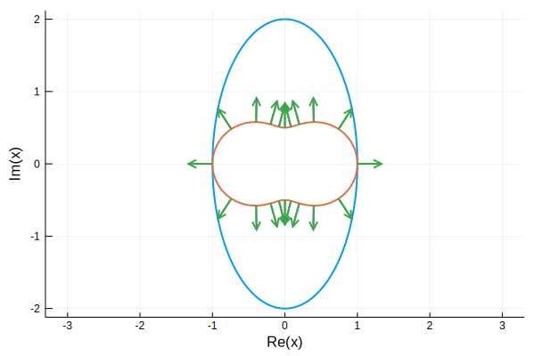
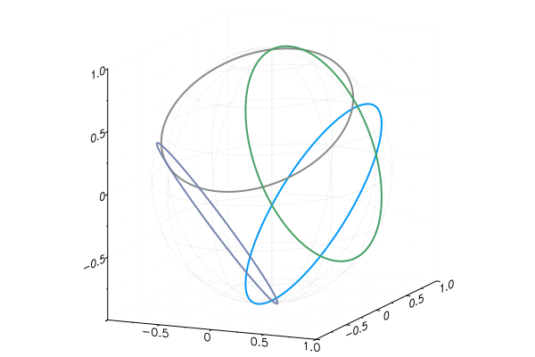

Curves
A curve is meant to be a smooth, non-self-intersecting curve in the extended complex plane. There is a generic Curve type that requires you to specify an explicit parameterization; it is not checked for smoothness or even continuity.
Abstract interface
Every AbstractCurve type is expected to implement the following methods. (Here C represents a value of type AbstractCurve and z is a number.)
| Method | Description |
|---|---|
point(C,t::Real) | Complex point on C at parameter value t in [0,1]. |
tangent(C,t::Real) | Complex tangent to C at t. |
reverse(C) | Reverse the direction of traversal. |
isfinite(C) | True if the curve does not pass through infinity. |
conj(C) | Complex conjugate of the curve. |
C+z | Translate of the curve by z. |
-C | Negate the curve. |
C*z | Multiply the curve C by complex number z; i.e., scale and rotate it about the origin. |
inv(C) | Invert the curve pointwise. |
There are also default implementations of the following methods:
| Method | Description |
|---|---|
point(C,t::AbstractArray{T<:Real}) | Vectorization of the point method. |
z+C,C-z,z-C,z*C,C/z,z/C | Translate/rotate/scale by a complex value. |
unittangent(C,t::Real) | Normalized tangent to C at t. |
normal(C,t::Real) | Unit (leftward) normal to C at t. |
arclength(C) | Arc length of C. |
plotdata(C) | Complex values that should be suitable for making a plot. |
There is also an AbstractClosedCurve subtype that is used to distinguish curves that close. It provides default implementations of the following methods.
| Method | Description |
|---|---|
winding(C,z::Number) | Winding number of C about z. |
isinside(z::Number,C) | Detect whether z lies inside the curve. |
isoutside(z::Number,C) | Detect whether z lies outside the curve. |
Generic types
Curve
A Curve represents an implementation of AbstractCurve that requires only an explicit parameterization of the curve. Given the (bounded) complex-valued function $f$ defined on $[0,1]$, then C=Curve(f) represents the curve $z=f(t)$. If $f$ is defined on $[a,b]$ instead, then C=Curve(f,a,b) is appropriate, but all future work with C uses the standard interval $[0,1]$ for the parameter. All Curve values are expected to be finite; i.e., isfinite(C) will always be true.
By default a tangent to C is computed when needed using a simple finite difference, resulting in less precision than the representation of the points on C (particularly near the endpoints). If an accurate function df is available for the complex-valued tangent $z'(t)$, it can be used via Curve(f,df) or Curve(f,df,a,b).
ClosedCurve
A ClosedCurve implements AbstractClosedCurve and is similar to a Curve, but the parameterization is checked against $f(0)\approx f(1)$ (or $f(b)\approx f(a)$), up to a tolerance that is the global default if not specified.
Specific subtypes
The following important particular types of curves are provided, together with appropriate particular methods. All of them provide the syntax C(t) as equivalent to point(C,t).
Each type below is parameterized; e.g., Line{T}, where T is either a native Complex type, or a Polar or Spherical type from ComplexValues. Points on the curve have the type T, which mainly affects how they are plotted. You can convert the value type, so for example, Spherical(C) will be plotted on the Riemann sphere.
In addition to the minimal methods set by the AbstractCurve definition above, each of these types provides the following methods. (C is a value of one of these types, and z is a number.)
| Method | Description |
|---|---|
arg(C,z) | Parameter value of a given point on the curve. |
isapprox(C1,C2) | Determine whether two values represent the same curve. |
isleft(z,C), isright(z,C) | Determine whether a point lies "to the left" or "to the right" of a line, ray, or segment cin its given orientation. |
dist(z,C) | Distance from a point to the curve. |
closest(z,C) | Point on the curve nearest to a given number. |
Line
Use L=Line(a,b) to create a line through the values $a$ and $b$. Given a point p on the line and a complex s whose complex sign gives the direction of the line, another syntax is Line(p,direction=s). Finally, with a point p on the line and the angle θ of the line, use Line(p,angle=θ).
Like other curves, a line is parameterized over $[0,1]$, with L(0) and L(1) both being infinity. Use reflect(z,L) to find the reflection of a point z across line L.
Ray
Use Ray(z,θ) to construct a ray starting at z and extending to infinity at the angle θ. Use Ray(z,θ,true) to reverse the ray, so it extends from infinity to z.
Segment
Segment(a,b) constructs the line segment from a to b.
Circle
Circle(z,r) constructs a circle centered at z with radius r, oriented counterclockwise (positively). UseCircle(z,r,false) to make the circle with clockwise orientation.
Circle(a,b,c) constructs the circle through the points a, b, and c. The ordering of the points determines the orientation of the circle. If the points are collinear, a Line is returned instead.
Use reflect(z,C) to reflect a point z through the circle C.
Arc
Arc(a,b,c) constructs the circular arc through the given three points. If the points are collinear, a Segment is returned.
Given a Circle C, the syntax Arc(C,start,delta) constructs an arc from C starting at the given start value and extending an amount delta. These latter values are expressed as fractions of a full rotation starting from the real axis. If delta is negative, it effectively reverses the orientation of C.
Examples
Here we set up a generic ClosedCurve for an ellipse, then plot it along with the so-called inverted ellipse. We add some normals to the inverted curve as well.
julia> el = ClosedCurve( t->cos(t)+2im*sin(t), 0,2π )
Complex-valued ClosedCurve
julia> invel = 1/el;
julia> plot(el); plot!(invel);
julia> t = 0:0.05:0.95;
julia> z = invel.(t);
julia> n = [normal(invel,ti) for ti in t]
20-element Array{Complex{Float64},1}:
1.0 - 1.4589943964682566e-12im
0.5474587794549212 - 0.8368326504132879im
-0.016834250140184314 - 0.9998582939708096im
-0.26783278278398936 - 0.9634654121794848im
-0.2514293238162319 - 0.9678756609840503im
6.123233995736766e-17 - 1.0im
0.25142932382187 - 0.9678756609825858im
0.26783278278358813 - 0.9634654121795962im
0.016834250140184658 - 0.9998582939708096im
-0.5474587794543113 - 0.8368326504136867im
-1.0 - 4.898587196589413e-16im
-0.5474587794534348 + 0.8368326504142602im
0.016834250139898053 + 0.9998582939708143im
0.2678327827821566 + 0.963465412179994im
0.2514293238195183 + 0.9678756609831967im
-1.8369701987210297e-16 + 1.0im
-0.25142932382019706 + 0.9678756609830202im
-0.26783278278378003 + 0.963465412179543im
-0.01683425013961257 + 0.9998582939708192im
0.5474587794536067 + 0.8368326504141476im
julia> quiver!(real(z),imag(z),quiver=(real(n)/3,imag(n)/3))
Plot{Plots.GRBackend() n=3}
It's often convenient to create a "standard" shape that is then moved and scaled using arithmetic operations.
julia> a = Arc(1,1+1im,1im)
Arc{Complex{Float64}} in the complex plane:
fraction 0.5 of (Circle(0.5+0.5im,0.707107,ccw)) starting at 0.875
julia> plot(a);
julia> for n = 1:3
plot!((1im)^n*a);
end
julia> plot!()
Plot{Plots.GRBackend() n=4}
On the Riemann sphere, lines and circles are all simply circles. So are their inverses.
julia> c = Spherical(Circle(1,1))
Circle{Spherical{Float64}} in the complex plane:
centered at ((latitude = 0.0⋅π, angle = 0.0⋅π)) with radius 1.0, positively oriented
julia> l = Spherical(Line(-1,1im))
Line{Spherical{Float64}} in the complex plane:
through ((latitude = 0.0⋅π, angle = 1.0⋅π)) parallel to ((latitude = 0.0⋅π, angle = 0.2499999999999999⋅π))
julia> plot(c); plot!(l,sphere=false);
julia> 1 / c
Line{Spherical{Float64}} in the complex plane:
through ((latitude = -0.20483276469913342⋅π, angle = 0.0⋅π)) parallel to ((latitude = 0.0⋅π, angle = -0.49999999999999994⋅π))
julia> 1 / l
Circle{Spherical{Float64}} in the complex plane:
centered at ((latitude = -0.1081734479693922⋅π, angle = -0.7499999999999997⋅π)) with radius 0.7071067811865485, positively oriented
julia> plot!(1/c,sphere=false); plot!(1/l,sphere=false)
Plot{Plots.GRBackend() n=23}